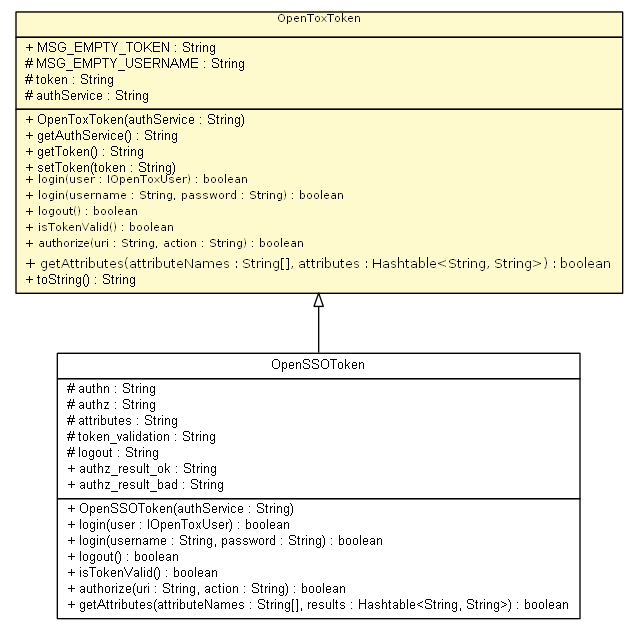

org.opentox.aa
Class OpenToxToken

java.lang.Object
 org.opentox.aa.OpenToxToken
org.opentox.aa.OpenToxToken
- Direct Known Subclasses:
- OpenSSOToken
public abstract class OpenToxToken
- extends Object
MSG_EMPTY_TOKEN
public static final String MSG_EMPTY_TOKEN
- See Also:
- Constant Field Values
MSG_EMPTY_USERNAME
protected static final String MSG_EMPTY_USERNAME
- See Also:
- Constant Field Values
token
protected String token
authService
protected String authService
OpenToxToken
public OpenToxToken(String authService)
getAuthService
public String getAuthService()
getToken
public String getToken()
setToken
public void setToken(String token)
login
public abstract boolean login(IOpenToxUser user)
throws Exception
- Throws:
Exception
login
public abstract boolean login(String username,
String password)
throws Exception
- Throws:
Exception
logout
public abstract boolean logout()
throws Exception
- Throws:
Exception
isTokenValid
public abstract boolean isTokenValid()
throws Exception
- Throws:
Exception
authorize
public abstract boolean authorize(String uri,
String action)
throws Exception
- Throws:
Exception
getAttributes
public abstract boolean getAttributes(String[] attributeNames,
Hashtable<String,String> attributes)
throws Exception
- Throws:
Exception
toString
public String toString()
- Overrides:
toString in class Object
Copyright © 2010-2011 Ideaconsult. All Rights Reserved.